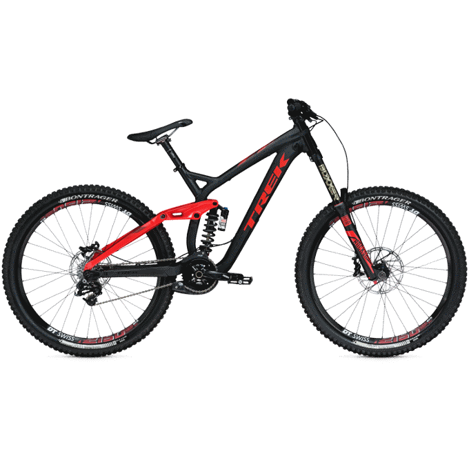

Bike Types
There are many different types and styles of bicycles. The basic structure of bicycles are altered to better suit the riding style, rider's individual style, the riding location, the rider's fitness level, the rider size, comfort, and overall performance. Bikes frames and components are constructed by a variety of materials. Frames are commonly constructed with aluminum, steel, or carbon fiber. Occasionally, a bike will be contructed with titanium. Materials all provide a different riding experience, so it is important to choose the right bike-components combination. Below are a couple of the major types of bikes.
Mountain Bikes
Mountain bikes are generally used for riding "off-road". Mountain bikes are known for the addition of suspension in the frame to account for bumpy riding and drops. So if you plan on riding in a location with no paved trails, a mountain bike would be best. There are actually several different styles of mountain bikes as well:
- Mountain Bike Types
- Hard-Tail - Characterized by the absence of suspension in the rear of the bike. Only has front fork suspension.
- Full-suspension - Two forms of suspension on the bike, front fork suspension and suspension within the frame.
- Fat-Bikes/29 plus - Fairly new bike technology, but these bikes are categorized by the size of the tires. Fat bikes are made to battle snow and sand, the wider tires add more overall stability. The 29 plus falls between the Fat bike and the traditional mountain bike.
Road Bikes
Road bikes are primarily used for riding and racing long distances on paved surfaces. They are characterized by the "drop-bars", thin tires, and the lightweight of the actual bikes. The frames are usually longer on the road bikes to put the rider in a more aerodyanmic position. There are several different types of road bikes:
- Road Bike Types
- Road Bike - Standard road bike with gears, 23mm-28mm smooth tires, and hand brakes.
- Track Bikes - Road bike with no gears (single-speed/fixie). Generally used for racing around a track(velodrome). Majority of track bikes do not have hand brakes.
- Time-Trial Bikes(TT) - Very similar to the standard road bikes, but they have a different handlebar for a more aggressive, more aerodyanmic position.
- Cyclocross bikes - Slightly different geometry then a standard road bike and wider tires, some are fitted with disc brakes. Used for riding on unpaved trails, similar to those ridden by mountain bike riders. This style of bike is said to be the "cross" of a road bike and a mountain bike.
- Touring bikes - Touring bike styles vary depending on the rider, but follow a similar design to a standard road bike, but are fitted with a rack and other accessories to aid in long distance "touring/adventure" rides.
Hybrid Bikes
Hybrid bikes are generally used for commuting and casual riding. They are take characteristics from both mountain bikes and road bikes to produce a versatile bike.
- Hybrid Bike Types
- Fitness Hybrids - They come in a variety of shapes and sizes, but are basically road bikes with flat(traditional) handlebars and slighly wider tires. Some do have suspension for added comfort.
- Comfort Hybrids - Also referred to as "cruisers", these bikes are known for being comfortable.
- Cargo bikes - These bikes are built for carrying additional cargo, so the frame is built differently to support more weight on the bike.
- Electric bikes - Electric bikes are actual very common in Europe and Asia. They are bicycles with an electric motor that either "assists" the rider's pedaling or propels the bike forward in it's own.
Hard-Tail
Full-Suspension
Fat Bike
Standard Road Bike
Track Bike
Time-Trial Bike
Cyclocross Bike
Touring Bike